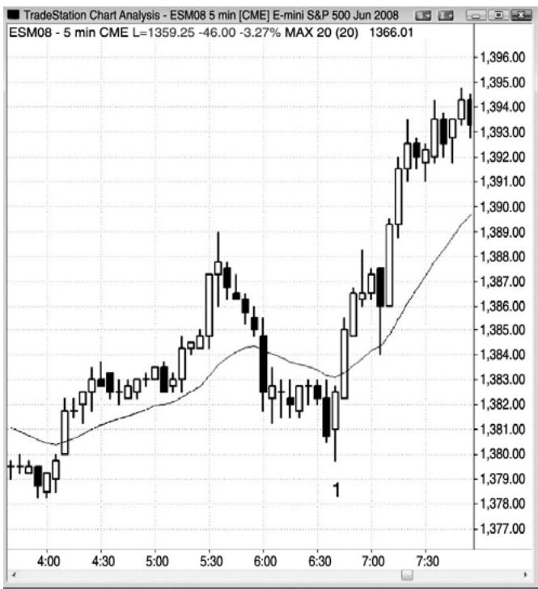
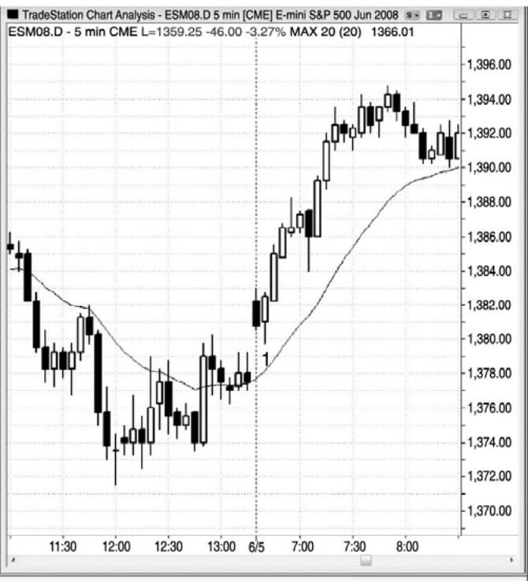
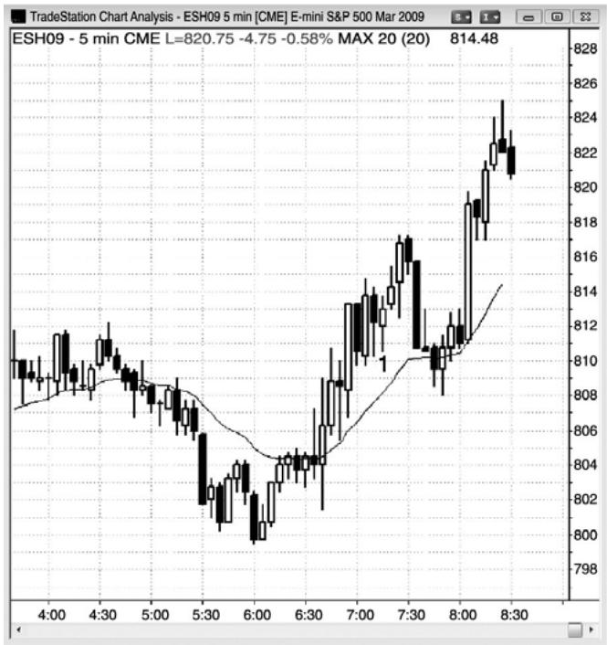
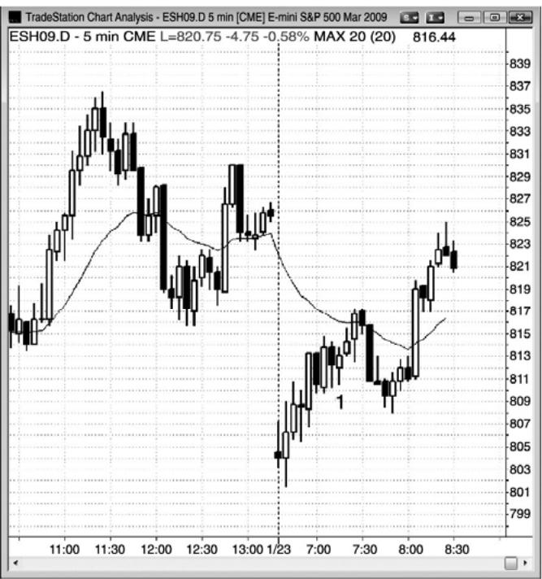

第17章 与盘前相关的形态¶
第 17 章 与盘前相关的形态
当观察全球期货交易系统电子迷你的跳动图或成交量图时，并不容易确定开盘时间，因为它只是 24 小时交易日的一部分，看起来与图表的其余部分并无差别。实际上，包含开盘时段的那一棒几乎总是包含开盘前的跳动。全球期货交易区间系统的高点和低点倾向于在日内时段被测试，全球期货交易系统中有些形态是在日内时段开始的很多棒完成。第一小时左右的运动通常非常迅速，仅日内时段便会提供很棒的价格行为。由于大部分交易者没有能力同时使用两张图表交易，特别是在开盘后快速运动的市场中，所以只选择全球期货交易系统或日内时段 5 分钟图。那是一个个人爱好的问题。有些成功的交易者全天都在观察全球期货交易系统，但是我喜欢观察日内时段。还有一些交易者观察全球期货交易系统图表一小时左右，然后便切换到日内时段图表。对于只观察白天时段的交易者来说，全球期货交易系统图表上形成的大部分交易，都有价格行为理由让他们选择相同的入场。当你设定入场、止损和利润目标订单时，你应该心甘情愿地错过偶尔的一笔交易，而不是冒险快速分析两张图表而把自己搞晕。
当市场在白天时段开盘出现一个大的缺口，并且在开盘 30 分钟前后回补时，在这一时间内，全球期货交易系统上均线的方向常常与白天时段相反。举例说明，如果出现一个大的下跌缺口，那么白天时段的均线将是下降的，但是，如果全球期货交易系统上出现一个更低低点，市场在开盘前 30 分钟内一直向上反弹，那么全球期货交易系统的均线可能是上升的，全球期货交易系统的价格可能位于均线上方。如果你只观察白天时段，看到一个大型缺口，而且市场在开盘后做强趋势运动去回补它，那么就观察动能，而不是均线，因为动能反应了正是不可靠的。
图17.1 全球时段和白天时段通常给出相关的信号


如图 17.1 所示，全球时段图表和白天时段图表通常会同时给出信号，不过通常来自不同的形态。左侧全球图表上和右侧白天时段图表上的棒 1都是太平洋标准时间上午 6:35的一棒。全球图表形成一个最终旗形反转买进信号，而白天时段图表形成一个空头趋势棒反转，是对昨天收盘前两条腿上涨的向上突破回撤。记住，如果当天第一棒是一条趋势棒，那么它通常是一个刮头皮架构。如果它失败，特别是出现一条反向趋势棒，那么它就是一个反向架构。
P196
在全球时段，棒 1 位于一条正在下降的均线下方，但是在白天时段，棒 1 位于均线上方。可能要花上一两个小时，两个时段的均线才会向同一方向运动，每一时段都会提供不同的、但同样准确的架构。然而，同时观察两张图表并不会给大部分交易者带来什么好处，而且那样做通常会降低交易者处理所有交易变量的速度，从而设置订单时出错。
图 17.2 全球时段上的均线是不同的


当出现大的缺口时，有时白天时段的均线在开盘 30 分钟内并没有什么帮助。图 17.2 中，右侧白天时段向下跳空，市场在90多分钟的时间里都未能向上超越下降的均线。然而，左侧全球时段（几乎是一天 24 小时交易）中的反弹，从开盘前 30 分钟开始，从太平洋标准时间上午 6:30 开始，市场就一直位于上升的均线上方，看起来看涨的情绪更高。上午 7:20 棒 1处的带刺铁丝架构位于均线上方，所以在全球时段中是看涨的，但是在白天时段中却是位于均线下方。然而，两张图表中的上行动能都很强，交易者们应该寻找买进架构。
P197